|
New years eve eve. John and Daniel rang in the morning and wanted to
buy my old bike. 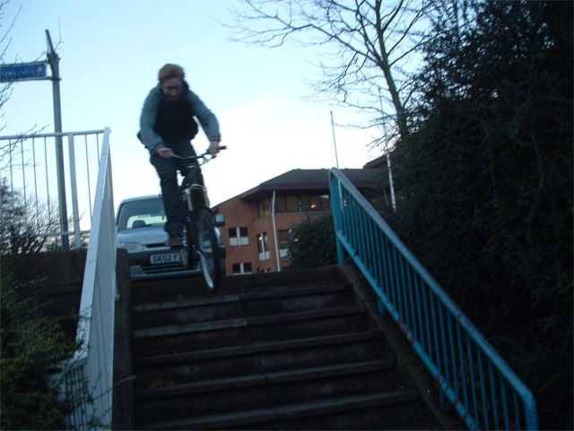 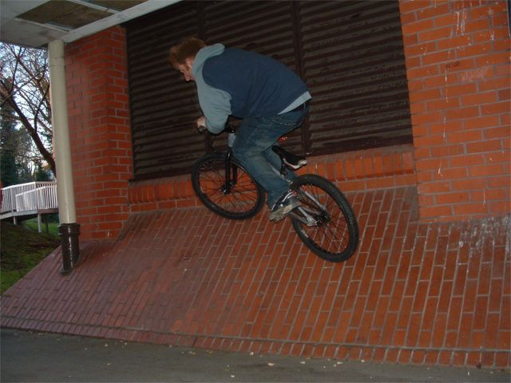 John Wallride. Tim said put the captions below because it's better. 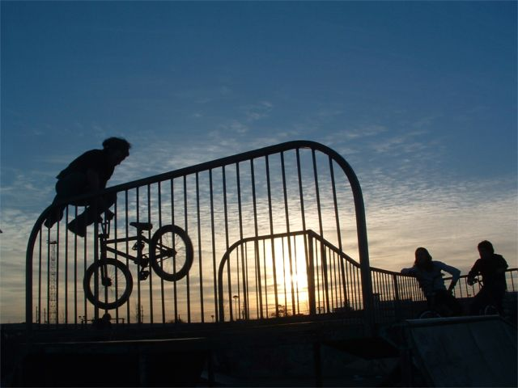 This guy was good. Blender to deck. 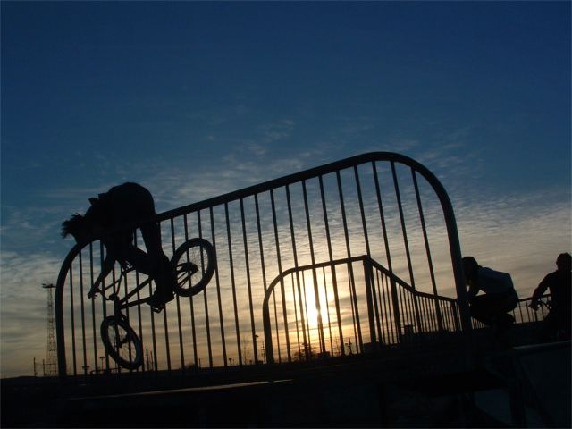 Tumbledrier washing machine to deck. That's a 360 barspin to you and me. 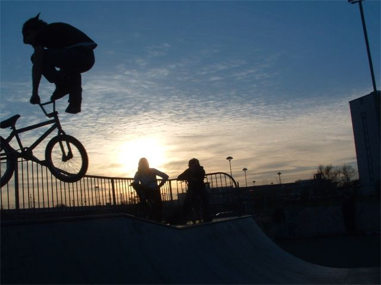 Another blander. 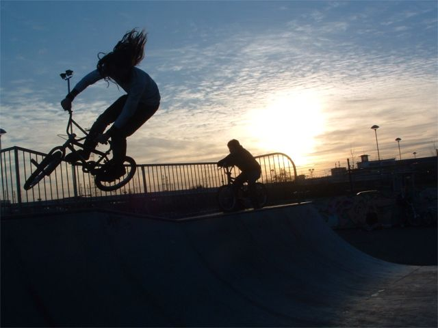 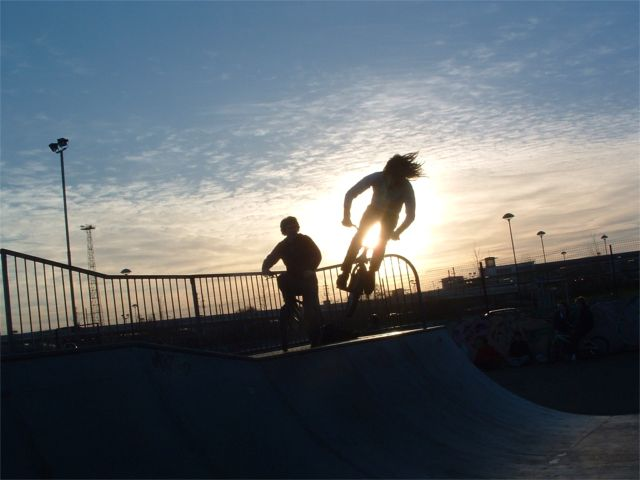 The sun shone out of this guy's... 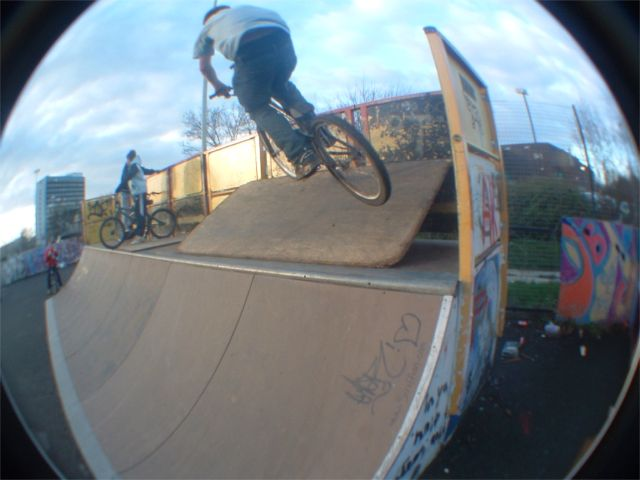 John wallride. 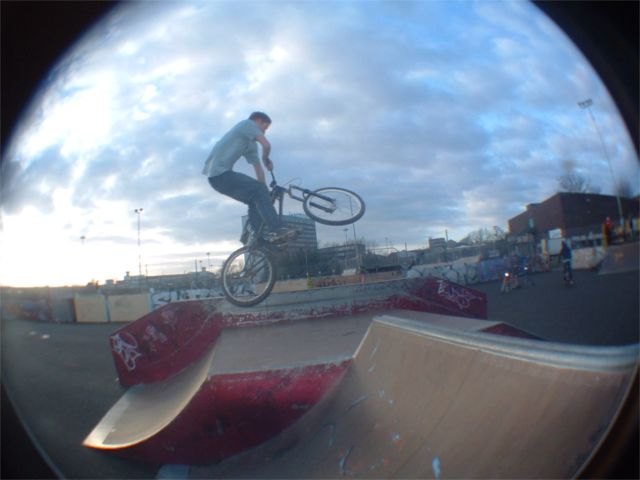 John table tweaker attempt. The pictures start going downhill now after those good ones at the top but I am putting this up as these guys are my friends and it's good to see people having fun on bikes, however good they are. 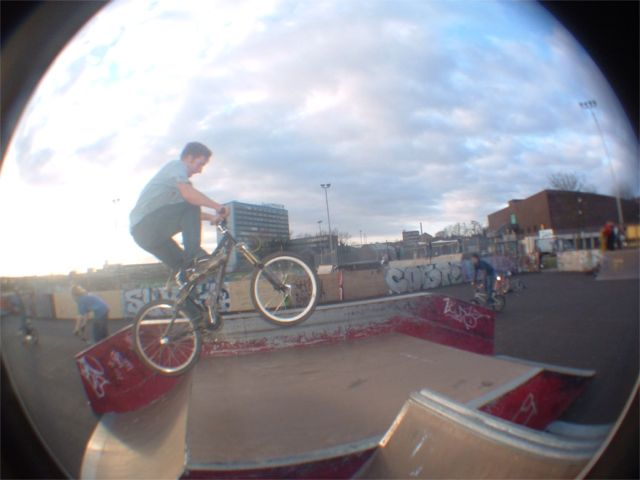 John froggy. 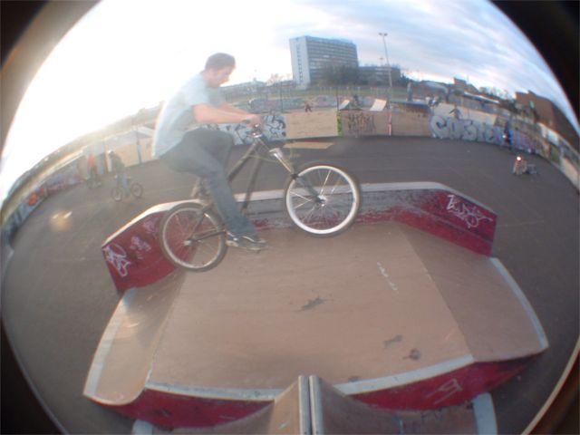 That's Seb;s old bike you know. I saw seb the other day. I said "you should come and play guitars". He said "ok, or ride bikes?" I said "no you wouldn't like it" He said "no" So maybe a guitars update soon 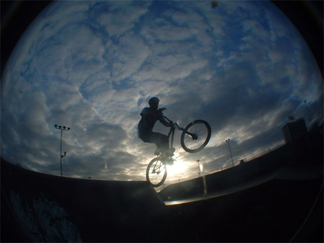 John 1 hander. 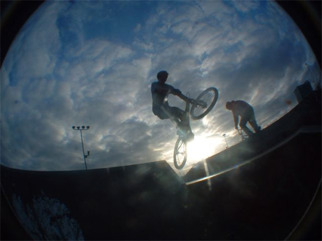 John tweak. 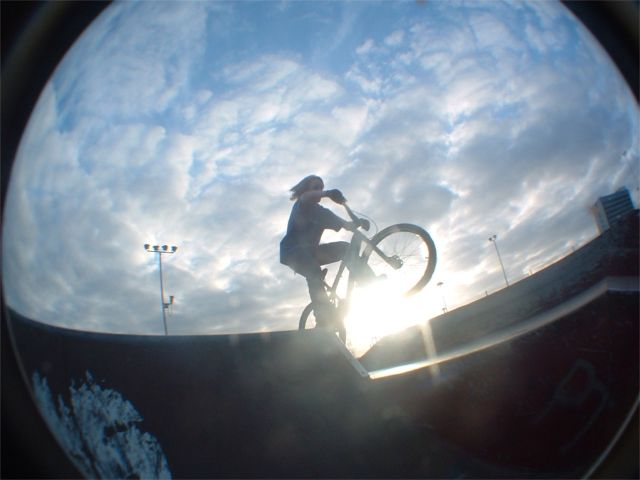 Daniel testing out his lovely new bike. 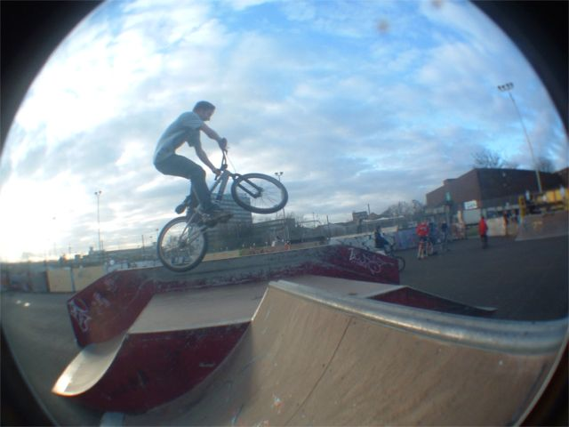 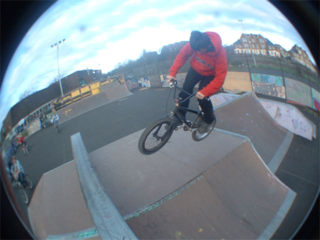 Some guy, 180 on a very slippery box. The ramps were dry but the ground was wet. Then when the sun went down the ramps got majorly slippy. 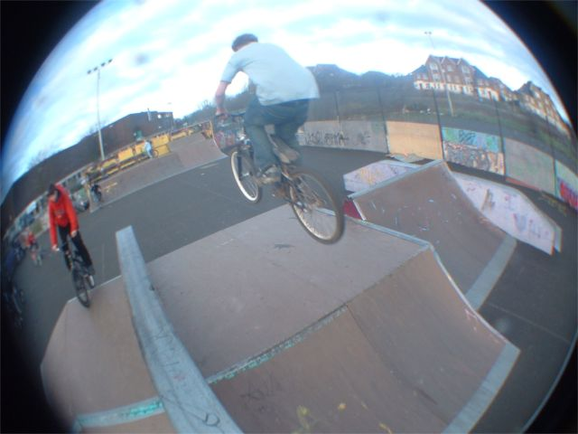 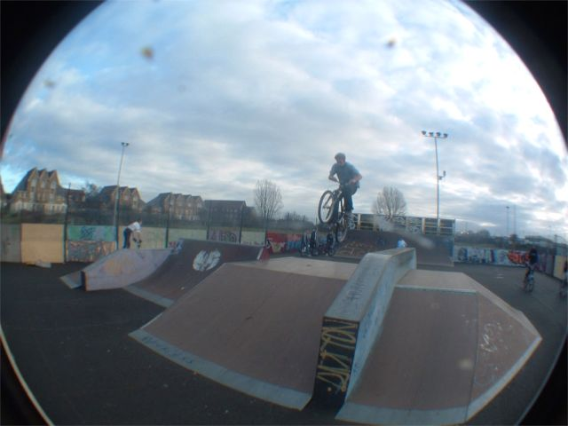 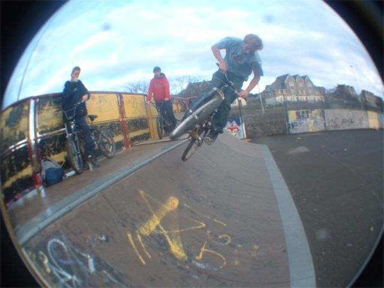 John 180 on 24in is hard. GET A BMX. Everytime I see John I tell him to get a BMX about 100 times. one day he will. 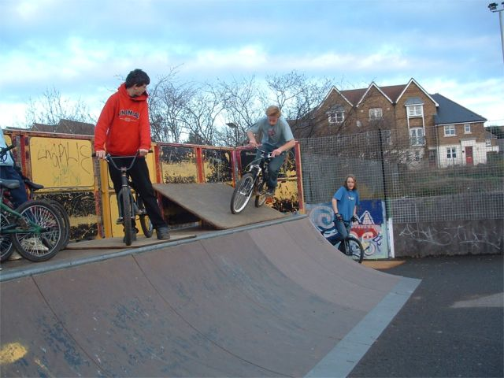 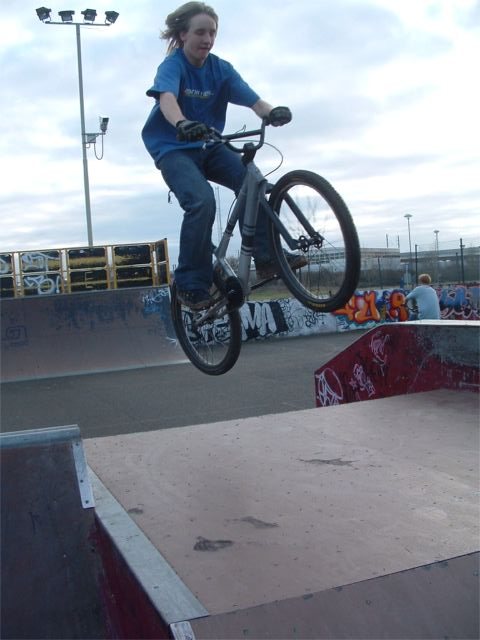 Daniel doing more testing. I think this is about the 2nd time he has ridden a skatepark and it's a new bike. 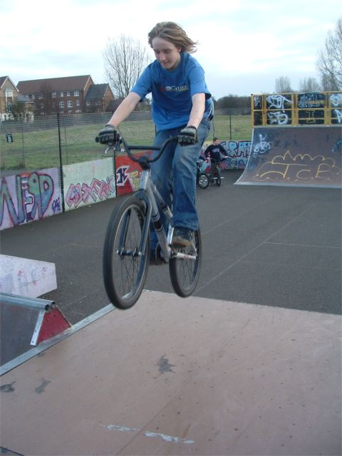 The End. |